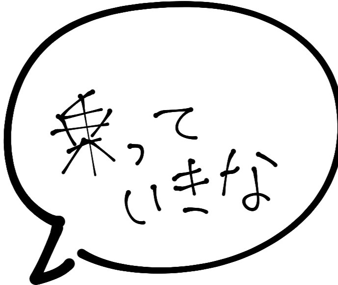

-----Highlight-----
--サン・セバスティアン通り--
白い村ミハスの中でもこの通りは一番美しいとされています。
その景観はまるで絵本の世界のような可愛らしい街並みとして知られており、写真撮影にもぴったりの場所となっています。
通り沿いの家にはカラフルな花が白い壁に飾られていて、観光客の視覚を楽しませてくれます。
レストランや雑貨店などもミハスの景観に溶け込んでおり、眺めるだけで楽しめることが出来ます。
--ミハスの闘牛場--
小さいが個性的な闘牛場であり、看板がなければそこが闘牛場であると気づかないでしょう。
観客席へ向かう通路には色彩豊かなプレートが提示されており、そこには闘牛を行った闘牛士の名前と日にちが刻まれています。
瞳に映る青空と闘牛場の黄色い砂と白い壁のコントラストが憎いほど眩しく感じられます。
闘牛場内は無料で見学できますが、闘牛を見るのにはお金がかかります。
訪れる際には時間帯などを確認してから行くと良いでしょう。
--ミハス展望台--
町の高台に展望台の広場があります。ミハスの白壁の建物が一望できます。
晴天であれば地中海の向こうにアフリカ大陸まで見えるそうです。
朝焼けの静けさのある街、夕焼けに赤く染まる街。
どちらを見ても素晴らしい景色が眺められるでしょう。
--ラ ペーニャ聖母礼拝堂--
ここはビルヘン・デ・ラ・ペーニャ広場の近くにある16世紀に修道士によって岩を掘りぬいて造られた教会です。
町の守護聖母であるラ・ペーニャ守護聖母像が祀られています。
ロバタクシーの停留所が近くにあるので、ロバに乗って次の目的地に向かうのも良いですね。

--ミニチュア博物館--
ここにはありとあらゆる小さなものが展示されています。中には顕微鏡で除くほど極小のものもあります。
まるで自分自身が巨人になったかのように思わせてくれる、そんな不思議な感覚を味わってみませんか？